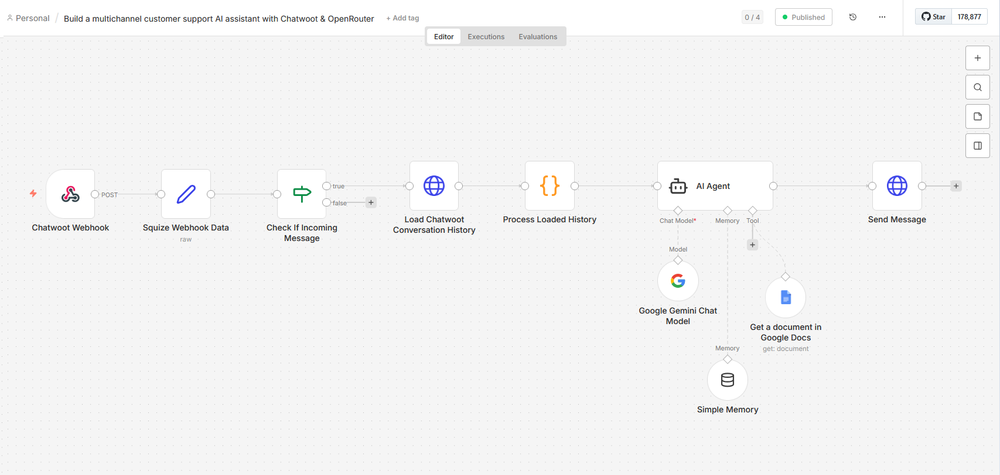

AI-Powered Customer Support
Agent
Designed and deployed a fully automated AI support assistant for Cherie Amour Boudoir — intercepting live chat messages, retrieving knowledge via RAG, and responding 24/7 without human intervention. Built end-to-end in 5 days on existing client infrastructure.
Cherie Amour Boudoir was handling all customer inquiries manually through their website chat — including nights, weekends, and peak post-campaign traffic. Common questions about hours, pricing, policies, and locations were consuming staff time and going unanswered outside business hours.
This project delivered a fully automated AI support assistant built on open-source tooling and self-hosted on the client's existing VPS. The system uses a Retrieval-Augmented Generation (RAG) approach — the AI only answers based on client-approved content in a Google Doc, and gracefully redirects customers to the team for anything outside that scope. The client can update their knowledge base at any time without developer involvement.
A traditional rule-based chatbot breaks the moment a customer asks something slightly outside its script. A RAG-based AI agent reads a live knowledge document on every query — meaning it handles natural language variations, follows up on prior messages with context, and automatically reflects any updates the client makes to their Google Doc. No retraining, no redeployment.
As marketing campaigns drove increased website traffic, the manual support model created compounding pain points that a static FAQ page couldn't solve. Each issue below represented a real operational cost to the business.
Customers landing on the site overnight or on weekends left without answers — a direct booking conversion loss.
The same questions about hours, policies, pricing, and locations consumed staff time — work that was already documented internally.
Response quality and accuracy varied by team member. No single source of truth enforced at the customer-facing layer.
Marketing campaigns drove unpredictable spikes in inquiries. Manual handling didn't scale with traffic growth.
The solution is built on two distinct pipelines. The Knowledge Pipeline maintains the AI's information source; the Chat Pipeline handles every customer message in real time. Separating these concerns means the client can update their knowledge base without touching any automation logic.
Pipeline 2 — Chat Pipeline (10-Node n8n Workflow)
Webhook
Webhook Data
Incoming
History
History
Memory + Docs
Message
Without the incoming message filter, the AI's own outgoing responses would re-trigger the webhook — creating an infinite loop where the agent replies to itself. The dual condition (event = message_created AND message_type = incoming) ensures only genuine customer messages proceed through the pipeline.
Technology Stack
| Layer | Technology | Role |
|---|---|---|
| Automation | n8n v2.4.4 (self-hosted) |
Workflow orchestration and AI agent runtime |
| Live Chat | Chatwoot (Docker) | Customer-facing chat widget and inbox management |
| LLM | Google Gemini API | Natural language understanding and response generation |
| Knowledge Base | Google Docs | Client-maintained, live source of truth for RAG retrieval |
| Memory | n8n Simple Memory | Per-conversation context using Chatwoot conv_id as session key |
| Infrastructure | VPS + Docker + nginx | Self-hosted on client's existing server; no new infrastructure cost |
| CMS | WordPress | Website where chat widget is embedded |
This project encountered a series of compounding infrastructure issues rather than AI configuration problems — a pattern common in self-hosted, multi-container deployments. Each challenge below required root-cause diagnosis before a fix could be applied.
| Challenge | Resolution |
|---|---|
|
Version Constraint n8n version too old to support AI/vector nodes |
Resolved Identified version gap; implemented workarounds using available nodes and Code node to replicate missing functionality within constraints. |
|
Reverse Proxy nginx (via hPanel/Hostinger) stripping api_access_token header on all requests
|
Resolved Diagnosed via curl testing at internal vs. external URLs; confirmed proxy interference; pivoted to internal Docker networking, bypassing nginx entirely.
|
|
Docker Networking n8n container could not reach Chatwoot via 127.0.0.1
|
Resolved Identified Docker network isolation as root cause; connected n8n to Chatwoot's Docker network using docker network connect.
|
|
Auth / 401 Chatwoot API returning 401 through public domain |
Resolved Bypassed nginx entirely using internal container name ( chatwoot-rails-1:3000) — cleaner, more secure, and eliminates the reverse proxy as a failure point.
|
|
AI Behavior AI Agent ignoring Google Docs tool and hallucinating answers |
Resolved Fixed tool description and system prompt to explicitly instruct the agent to always query the knowledge tool before generating a response. |
|
Memory Simple Memory node failing with no session ID |
Resolved Configured session ID using Chatwoot conv_id, isolating memory context per customer conversation.
|
|
RAG Quality Google Doc tabs not being read — only default tab loaded |
Resolved Consolidated all knowledge into a single, well-structured tab with clear section headings. Resolved retrieval gap immediately. |
|
API Quota Gemini API rate limiting during testing |
Resolved Identified free tier quota constraints; resolved by linking billing account to GCP project. |
|
Webhook Logic Webhook catching wrong event types ( contact_updated, typing_on)
|
Resolved Added dual filter: event = message_created AND message_type = incoming — eliminates system events and prevents the agent from processing its own outgoing messages.
|
Infrastructure was the hardest part — not AI. The majority of debugging time was spent on Docker networking, reverse proxy interference, and API authentication — not on LLM configuration. Self-hosted AI projects require full-stack fluency: you must be able to diagnose at every layer from nginx headers to container networking to LLM tool-calling behavior.
Each of the four major design choices below was made in response to a specific constraint or client requirement — not as a default. The alternatives considered are documented to show the reasoning behind the selected approach.
Fine-tuning bakes knowledge into a model at training time — requiring retraining every time business information changes. RAG reads a live Google Doc on every query, so the client updates a document they already know and changes are reflected immediately. Zero developer involvement for content maintenance.
hPanel's nginx was silently stripping authentication headers on external requests. Routing all n8n-to-Chatwoot communication through Docker's internal network bypasses the reverse proxy entirely — faster, more secure, and eliminates a fragile external dependency.
The starting template used a Basic LLM Chain with no tool use or memory. Upgrading to an AI Agent node enabled RAG (via tool calling), conversation memory, and more precise response control — all within the same workflow. The agent can reason about when to call the knowledge tool rather than always or never calling it.
A vector database would provide more sophisticated semantic search — but it introduces infrastructure the client cannot manage independently. Google Docs was chosen because the client already uses Google Workspace, requires no training to edit, and is reflected immediately in the AI's responses. The right tool for the client's actual capabilities.
The system was delivered end-to-end in 5 days and runs on the client's existing VPS infrastructure at minimal additional cost. The estimated Gemini API cost for typical support volume is under $5/month.
-
Fully automated customer support responding to inquiries 24/7 — including nights, weekends, and post-campaign traffic spikes
-
AI correctly answers questions about hours, policies, pricing FAQs, locations, and contact information based on the live knowledge document
-
Graceful fallback: out-of-scope questions are redirected to the team with a specific call or email CTA — the AI never fabricates answers
-
Per-conversation memory maintains natural, context-aware dialogue — follow-up questions are understood without customers repeating themselves
-
Zero developer maintenance required for content updates — the client edits their Google Doc directly
-
Entire solution runs on existing VPS infrastructure — no new services, no new subscriptions beyond Gemini API usage

The majority of debugging time was infrastructure — Docker networking, reverse proxy behavior, API authentication. For self-hosted AI projects, full-stack fluency is a prerequisite, not a bonus.
hPanel silently interfered with nginx in ways that were difficult to diagnose. For future projects with custom API integrations, bare VPS (e.g., Hetzner) with Coolify is a significantly better platform choice.
Answer quality improved dramatically once the Google Doc was consolidated into a single tab with clear section headings. LLM retrieval is sensitive to document structure — clean, labeled content produces accurate responses.
Much of the debugging could have been caught sooner by testing the production webhook URL rather than the test trigger. End-to-end testing early in the build cycle saves significant troubleshooting time downstream.
The current system answers questions from a static knowledge base. Phase 2 extends the AI agent with a second tool — a live connection to Stratus (the studio's ERP) — enabling it to answer personalized account questions like "When is my photoshoot?" without any staff involvement.
Customer: "When is my photoshoot?" → Agent: "I can look that up for you — what email or phone number is on your account?" → Customer provides it → Agent queries Stratus → Agent: "Your session is booked for March 28th at 2:00 PM at the Austin studio." The existing per-conversation memory handles the multi-turn exchange automatically — no new architecture needed for that part.
Architecture Extension
This is a natural extension of what's already built. The AI Agent (Node 06) already knows how to call tools — it calls the Google Docs knowledge tool today. Adding Stratus lookup is a matter of registering a second tool on the same agent. The agent will reason about which tool to use based on the customer's question, without any additional routing logic.
| Component | Already Built | Phase 2 Addition |
|---|---|---|
| AI Agent (Node 06) | Calls Google Docs tool for FAQs | Gains a second tool: Stratus account lookup |
| Conversation Memory | Context maintained per conv_id |
No change — agent already remembers email given mid-conversation |
| Stratus Integration | — | n8n webhook → Zapier → Stratus API → response back to n8n |
| Privacy Scoping | — | System prompt instructs agent to only return data for the verified email — no arbitrary lookups |
Integration Approach — n8n → Zapier → Stratus
Stratus exposes its data through a native Zapier integration. Rather than reverse-engineering the underlying API, the Phase 2 design uses Zapier as the integration bridge — a deliberate architectural choice that leverages Stratus's supported integration path and avoids building a custom API wrapper.
Known consideration — latency. Zapier's execution time adds a round-trip delay between the customer's message and the AI's response. On Zapier's free tier this can reach 10–15 seconds, which may feel slow in a live chat context. Zapier paid tier significantly reduces this. If latency becomes a real issue, the fallback is to investigate whether Stratus exposes a direct REST endpoint that n8n can call without Zapier as an intermediary.